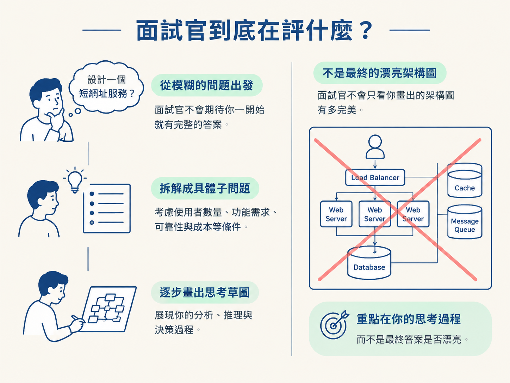
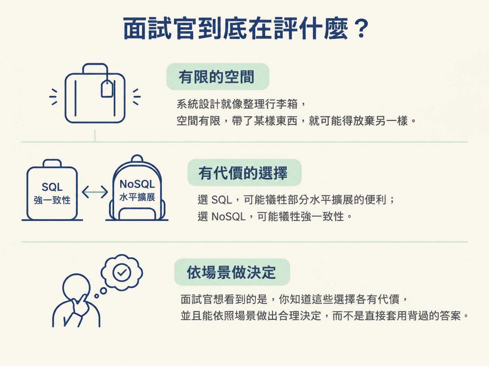
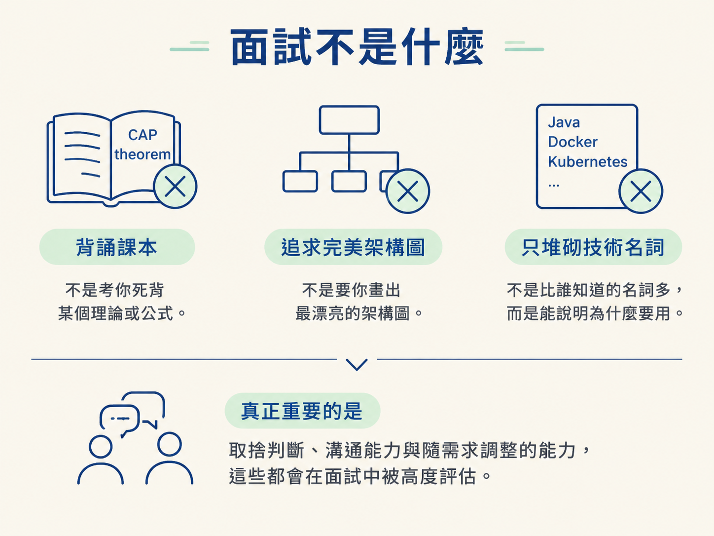
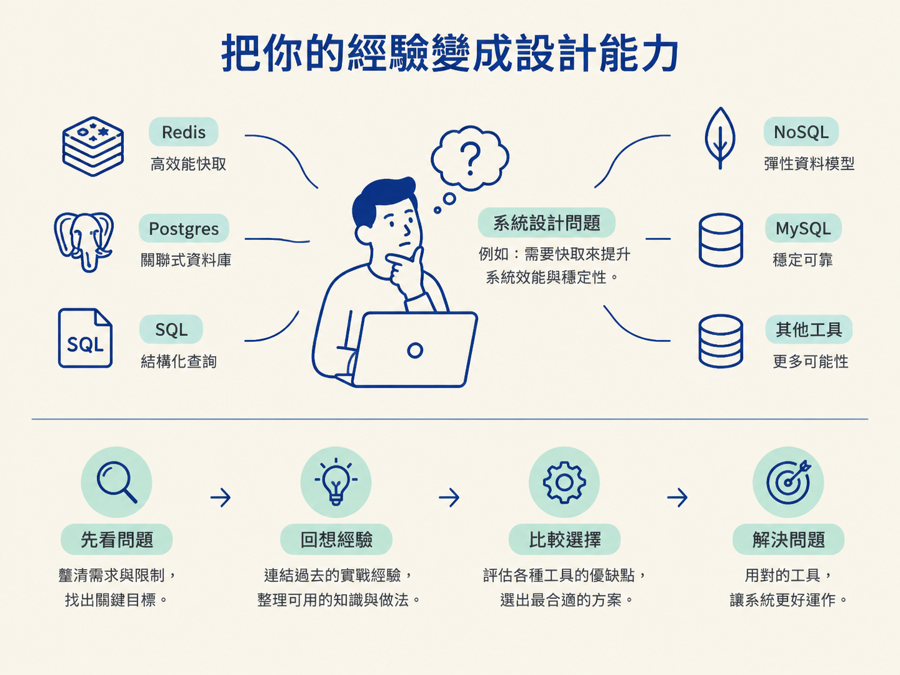

這一課會先釐清系統設計面試的核心：問題解決、溝通，以及取捨判斷。同時也會說明它不是什麼——不是背答案，也不是追求一個不存在的完美方案。
系統設計面試和演算法面試最大的差別，是演算法通常有明確的對錯，但系統設計沒有唯一解。
當面試官問你「設計一個短網址服務」或「設計一個聊天系統」，你不可能提出一個放諸四海皆準的完美答案。因為真正的設計，總是要配合使用者數量、功能需求、可靠性與成本等條件。
所以，面試官看的不是你最後畫出的架構圖有多漂亮，而是你如何從模糊的問題出發，一步步做出合理決定。

第一，問題解決能力。面對一個大而模糊的問題，你能不能把它拆成具體、可以處理的子問題？面試官會觀察你從哪裡開始、為什麼這樣拆，以及每一步的推理是否清楚。
第二，溝通能力。系統設計面試是一場對話，不是把答案默寫在白板上的獨白。你需要一邊思考、一邊說明，讓面試官跟得上你的方向：先問清楚需求，解釋每個決定背後的原因，也主動確認面試官的偏好與回饋。
第三，取捨判斷。系統設計就像整理行李箱：空間有限，帶了某樣東西，就可能得放棄另一樣。選 SQL，可能犧牲部分水平擴展的便利；選 NoSQL，可能犧牲強一致性。面試官想看到的是，你知道這些選擇各有代價，並且能依照場景做出合理決定，而不是直接套用背過的答案。

不是背誦測驗。背熟 CAP theorem 本身不會讓你通過面試。真正重要的是，你能不能說明它在某個場景中會如何影響設計，以及為什麼要做出相應的選擇。
不是追求完美。一開始畫出粗略的架構圖沒有關係。系統設計本來就是逐步釐清、逐步修正的過程。重點是你能不能根據新需求或面試官的回饋，持續調整方案。
不是只考技術。資料庫、快取與服務拆分固然重要，但取捨判斷、溝通方式與適應變化的能力，也會在評分中占很大的比重。就算你知道很多技術名詞，如果無法說明「為什麼現在要用它」，答案仍然會顯得空泛。

你做過 REST API、用過 Postgres 和 Redis，這些經驗的價值不在於把技術名稱一一念出來，而在於把它們和眼前的問題連起來。
例如，面試官問到快取設計時，你可以說：「我之前在專案中用 Redis 做 session cache，但那個場景是 X；這裡的需求是 Y，所以我會選擇 Z。」
這樣的回答比單純說「我會用 Redis」更有說服力，因為你同時交代了過去的經驗、現在的差異，以及做出選擇的理由。你不是把工具當成萬用槌子，而是先看問題，再決定要拿哪一把工具。

這也是你之後學習每個系統設計概念時，可以反覆使用的思考方式：「這跟我之前做的 X 有什麼關係？」當你能說清楚概念和自身經驗的連結，面試官會更容易看出你是真的理解，而不是只在背書。